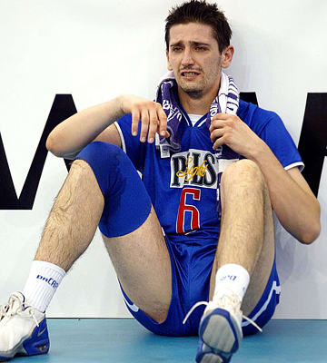

Волейбол - это вид спорта, который существует с конца 1800-х годов. Со временем он превратился в высококонкурентную игру, которой наслаждаются миллионы людей во всем мире. За прошедшие годы было проведено несколько волейбольных матчей, которые вошли в историю и запомнились на долгие годы.
Волейбольные матчи, которые вошли в историю спорта
Одним из самых запоминающихся волейбольных матчей в истории был матч Олимпийских игр 1984 года между сборными США и Бразилии. Матч проходил перед домашней публикой в Лос-Анджелесе, и это была битва двух лучших команд мира. Соединенные Штаты выиграли матч в пяти сетах, причем каждый сет был невероятно близким. Этот матч стал свидетельством мастерства и решимости обеих команд и часто упоминается как один из величайших волейбольных матчей всех времен.
В 1996 году мужская сборная Нидерландов по волейболу вошла в историю, завоевав первую в своей истории золотую олимпийскую медаль. Команда победила Италию в финальном матче, а лучшим нападающим этого турнира стал голландец Бас ван де Гор. Эта победа была особенно приятной для Нидерландов, так как на трех предыдущих Олимпийских играх они были близки к завоеванию золота, но всегда оступались.Через полгода после триумфа на Олимпиаде в Лондоне сборная России, которой на тот момент уже руководил Андрей Воронков, уверенно победила на чемпионате Европы 2013 года. Этот успех на ЧЕ стал первым для отечественного волейбола со времен СССР. В плей-офф россияне не оставили шансов Словакии, Франции и Сербии, а в финале – Италии.
Спустя четыре года сборная России повторила успех, хотя уже и не считалась безоговорочным фаворитом турнира. Под руководством нового наставника Сергея Шляпникова россияне «катком» прошлись по своим соперникам, не уступив оппонентам до финала ни одного сета. В тяжелом финале была повержена Германия.
Еще одним незабываемым волейбольным матчем стал матч за золотые медали Олимпийских игр 2008 года в Пекине между сборными Бразилии и США. Этот матч стал еще одной классической битвой между двумя лучшими командами мира. Соединенные Штаты проиграли первый сет, но проезде вернулись и уверенно выиграли три следующих сета. Матч был очень напряженным, обе команды боролись за каждое очко, но в итоге США вышли вперед и завоевали золотую медаль.
Одна из величайших побед в истории не только волейбола, но и всего отечественного спорта. Сборная России на лондонской Олимпиаде считалась одним из фаворитов, но главным претендентом на победу была национальная команда Бразилии, которая, кстати, нанесла россиянам единственное поражение на групповом этапе турнира.
В четвертьфинале подопечные Владимира Алекно уверенно переиграли Польшу, а в полуфинале менее убедительно разобрались с Болгарией. В финальном поединке россиян ждали непобедимые бразильцы.
Представители Южной Америки на сумасшедших эмоциях не оставили отечественным волейболистам шансов в первых двух партиях, и стало очевидно, что Россия возьмет «золото» только в том случае, если произойдет настоящее чудо. Третья партия была вырвана россиянами «на зубах», четвертая – более уверенно, а в пятой наши волейболисты буквально смяли бразильцев и одержали сверхволевую историческую победу. Чудо случилось.
Волейбол стал одним из самых захватывающих и запоминающихся видов спорта в истории. А великолепные матчи продемонстрировали мастерство и решимость одних из величайших волейболистов мира и подарили болельщикам незабываемые моменты. Будь то Олимпийские игры или национальный турнир, волейбольные матчи способны увлечь зрителей и оставить неизгладимое впечатление.
Мировая лига. Самые яркие финалы
29 июня 1996 года, Роттердам. Нидерланды — Италия — 3:2 (17:15, 15:12, 10:15, 10:15, 22:20).
Доминирование итальянской сборной в мировом волейболе в середине 90-х годов выглядело не просто подавляющим, а устрашающим, особенно в канун Олимпийских игр, проводимых в Атланте. Итальянцы были намерены взять единственную пока непокорённую вершину, и в течение всего розыгрыша Мировой лиги проиграли лишь дважды за 16 матчей. К слову, финалисты играли в одной группе интерконтинентального раунда, и там «скуадра адзурра» одержала четыре победы из четырёх возможных.
Однако финал, проводимый в Роттердаме за месяц до старта Олимпийских игр, оказался самым тяжёлым матчем для сборной Италии, пожалуй, за всю историю розыгрыша. Матч длился более трёх часов, был наполнен драматичными спасениями, отчаянной борьбой в защите и, конечно, великолепной игрой в атаке, ведь по обе стороны сетки играли признанные мастера. Андреа Джани, Лоренцо Бернарди, Адреа Зорзи отыгрывали подачу за подачей, Бас ван де Гор, Петер Бланже и Ян Постума же продолжали гнуть свою линию. Тай-брейк, завершившийся в пользу голландцев со счетом 22:20 (в 1996 году игра шла по старым правилам, с отыгрышем подачи), заставил итальянцев сложить с себя титул. Обессиленные «ораньес» сдержанно радовались на своей стороне сетки – зато не сдерживала своих эмоций публика, собравшаяся поболеть за своих любимцев. В Нидерландах обычно не принято отмечать нефутбольные победы, однако, по отчётам голландской прессы тех лет, Роттердам гулял всю ночь.
Спустя полтора месяца олимпийский финал в Атланте сведёт эти же команды, и вновь победу одержат голландцы, оформив своё первое (и пока что единственное) золото в главном турнире четырёхлетия. Интересно, что выиграет сборная Нидерландов с тем же счётом по партиям, в столь же упорной борьбе.
16 июля 2000 года, Роттердам. Италия – Россия – 3:2 (25:22, 18:25, 20:25, 25:21, 15:13).
И вновь финал предолимпийского розыгрыша Мировой лиги стал одним из самых-самых. Зал «Ахой» в Роттердаме видел всякое, был спокоен и не любил итальянцев. На вопрос российских журналистов, почему голландцы болеют за русских, болельщики, не моргнув глазом, отвечали, что российский и нидерландский флаги похожи. Получив, таким образом, неожиданную поддержку, наша сборная взялась за дело. Примерно тем же самым занялись итальянцы, но с маленьким отличием: у них получалось значительно лучше. Забойщиком «голубой эскадры» выступал Андреа Сарторетти, измучивший принимающих российской сборной своей подачей. Его незабываемая «цыганочка с выходом» перед вводом мяча в игру завораживала… Сарторетти исполнил всего один чистый эйс, но именно на его подачах было выиграно подавляющее количество брейковых мячей для итальянцев. В российской сборной в запасе был оставлен Сергей Тетюхин, которого заменил Илья Савельев – попытка усилить блок. Пару Илье составил Игорь Шулепов. Роман Яковлев проявил себя во всей своей красе во второй и третьей партиях, забивая практически бесперебойно и, что важно, безошибочно. Так же шло и в четвёртой партии, однако ход конём совершил главный тренер «скуадра адзурра» Андреа Анастази: вместо Луиджи Мастранджело, у которого игра не задалась, он выпустил в центр сетки… Андреа Джани. Этот момент ввёл в ступор почему-то именно Константина Ушакова, который начал ошибаться в простейших ситуациях. Проиграв четвёртый сет и несколько растерявшись, бороться в полную мощь на тай-брейке и показать свою игру сборная России не смогла, уступив золото Мировой лиги итальянцам. Итальянцам, для которых эта победа в финалах Мировой лиги стала восьмой и пока что последней.
18 августа 2002 года, Белу-Оризонти. Бразилия – Россия – 1:3 (21:25, 23:25, 25:22, 17:25).
25-тысячный зал «Минейриньо» в Белу-Оризонти, «младший брат» футбольного стадиона «Минейро», битком забитый болеющими за Бразилию людьми, и сборная России. Маленькая горстка русских против этого кричащего, размахивающего руками, давящего на уши и мозг единого организма. Один из лучших матчей в истории сборной России вообще и символ силы духа, которую наша команда иногда демонстрирует в лучших традициях русского характера.
Перед началом большого финала на «душевный разговор» Геннадий Шипулин вызывает Вадима Хамутцких и Павла Абрамова, чьими действиями тренер был крайне недоволен накануне. Доподлинно неизвестно, о чём был разговор и до чего в итоге договорился Шипулин со своими игроками, но именно Хамутцких и особенно Абрамов стали творцами исторической победы. Павел не только идеально принимал, но ещё и забил практически всё, летевшее в его сторону. Вадим же, помимо своей основной деятельности связующего, затерзал бразильцев вариативными подачами. В основном от хитрого и бородатого Хамутцких страдал Налберт, которого на последнем собрании перед финалом россияне выбрали на роль «жертвы». Алексей Кулешов и Роман Яковлев закрыли опечаленного приёмом Налберта и в четвёртой зоне. Лишь Жиба методично пробивал, обводил, обманывал и проходил наш блок – любой. Но его атаки смотрелись на фоне невыразительной (из-за страдающего приёма) общей игры в нападении жестами отчаяния. Россияне в том матче выглядели монументально. Отдав в борьбе на балансе всего один сет – третий, в четвёртом наши ребята имели уже подавляющее преимущество.
13 июля 2003 года, Мадрид. Сербия и Черногория – Бразилия – 2:3 (16:25, 25:21, 25:19, 23:25, 29:31).
«Битва поэтов и воинов» — так образно эмоциональная испанская пресса окрестила этот финал, отнявший столько нервных клеток даже у болельщиков не из Бразилии или Сербии и Черногории. Самый зрелищный, самый эмоциональный и самый рекордный финал в 24-летней истории Мировой лиги состоялся в Мадриде. Южные славяне, вышедшие на первые роли после победы на Олимпийских играх в Сиднее, выглядели действительно воинственно. Их предводители, братья Грбич и великолепный Иван Милькович, не улыбнулись за весь турнир, кажется, ни разу – все их помыслы были о победе, вокруг которой они ходили достаточно давно. Бразильцы, напротив, вели себя в своей обычной манере: обнимались, радовались жизни, ссорились в тайм-аутах, как одна большая громкоголосая семья, и крикливо препирались с судьями. Ироничный Никола Грбич лишь кривил губы, глядя на выкрутасы Жибы и Данте. Жиба, к слову, из рук вон плохо играл первые два сета и был усажен на скамейку громко ругающимся на него Бернардо Резенде. Отдохнувший лидер «канариньос» вышел в конце четвёртого сета при игре на балансе, чтобы решить судьбу сета в пользу своей команды.
А потом был тай-брейк… Тай-брейк, закончившийся со счётом 29-31. «Пятая партия длиною в жизнь», как скажет потом Слободан Бошкан. Когда всё закончится, Иван Милькович, сделавший в этом матче для своей команды всё и чуть больше, чем всё, упадёт на колени под сеткой и заплачет. Его уведут с площадки партнёры, а сами останутся сидеть в разных углах зала и угрюмо глотать злые слёзы, с молчаливой завистью глядя на бразильский карнавал. Сербам так и не удалось пока выиграть ни одной Мировой лиги, а то поражение и по сей день остаётся для сербской сборной одним из самых тяжёлых в истории. Не обидным, потому что проиграть в борьбе не обидно. Но вспоминать такие поражения тяжело.
27 августа 2006 года, Москва. Франция – Бразилия – 2:3 (25:22, 25:23, 22:25, 23:25, 13:15).
Сборная Франции, прокравшаяся в финальную часть турнира, в полуфинале повергла хозяев турнира — сборную России — и вышла на бразильцев. Сборная Бразилии, ожидавшая в финале россиян, как это часто бывает у эмоциональных «канариньос», не смогла настроиться на французов с самого начала. И проиграла первые два сета, не в силах противостоять атакам Гийома Самики и Себастьяна Рюэтта. Вновь всё в бразильской сборной держалось на Жибе: на блоке, подаче, приёме и, конечно, атаке. Бесновавшийся в перерывах Бернардо Резенде лишь к концу третьего сета сумел вложить в головы остальных своих подопечных нужную мысль. И верно, проигрывать французам, несмотря на то что те собрали более чем приличную команду, было как-то не по статусу чемпионам мира и Олимпийских игр. Поэтому бразильцы выдохнули – и собрались на концовки сетов, а все пять партий завершались в игре на балансе. В итоге опыт бразильцев победил задорных и работящих французов, а Жиба заработал 29 очков за матч и титул лучшего игрока турнира.
10 июля 2011 года, Гданьск. Бразилия – Россия – 2:3 (25:23, 25:27, 23:25, 25:22, 11:15).
Финал в Гданьске стал одним из самых красивых в истории противостояний российской и бразильской сборных – затяжные пятисетовые матчи здесь не редкость. Иногда в прессе, пишущей и говорящей о волейболе, даже проскальзывает испанское выражение «эль класико» применительно к встречам именно этих двух сборных. Два флагмана мирового волейбола встретились в финале, и это было самым справедливым исходом всего турнира, на протяжении которого именно сборные России и Бразилии имели подавляющее преимущество.
Тот матч стал началом победной поступи российского коллектива вверх, на олимп, и победа в Мировой лиге 2011 года была самым первым шагом. У многих тот матч ещё не выветрился из памяти, а кто-то признаётся, что до сих пор пересматривает ту игру, испытывая непередаваемые ощущения, связанные не только с самим волейболом, но и с показом матча. Это был прорыв в телепоказах этого вида спорта, пример всему миру, как его нужно показывать.
Сборная России, изрядно понервничав в первых двух сетах, затем успокоилась, о чём свидетельствовала концовка второй партии, где бразильцев дожали в игре на балансе, после чего наши ребята устремились вперёд. И даже травма Максима Михайлова, набирающего очко за очком, не остановила команду: Дмитрий Мусэрский и Александр Волков наводили ужас на подаче, Тарас Хтей подчищал огрехи всей команды в защите, Денис Бирюков забивал поистине «шальные» мячи… В пятой партии преимущество российского коллектива было уже подавляющим, и под овации поляков, изначально поддерживавших бразильцев, наша сборная оформила свою вторую победу в финалах Мировой лиги. А самым ценным игроком турнира заслуженно стал Максим Михайлов.

 В 1996 году мужская сборная Нидерландов по волейболу вошла в историю, завоевав первую в своей истории золотую олимпийскую медаль. Команда победила Италию в финальном матче, а лучшим нападающим этого турнира стал голландец Бас ван де Гор. Эта победа была особенно приятной для Нидерландов, так как на трех предыдущих Олимпийских играх они были близки к завоеванию золота, но всегда оступались.Через полгода после триумфа на Олимпиаде в Лондоне сборная России, которой на тот момент уже руководил Андрей Воронков, уверенно победила на чемпионате Европы 2013 года. Этот успех на ЧЕ стал первым для отечественного волейбола со времен СССР. В плей-офф россияне не оставили шансов Словакии, Франции и Сербии, а в финале – Италии.
Спустя четыре года сборная России повторила успех, хотя уже и не считалась безоговорочным фаворитом турнира. Под руководством нового наставника Сергея Шляпникова россияне «катком» прошлись по своим соперникам, не уступив оппонентам до финала ни одного сета. В тяжелом финале была повержена Германия.
В 1996 году мужская сборная Нидерландов по волейболу вошла в историю, завоевав первую в своей истории золотую олимпийскую медаль. Команда победила Италию в финальном матче, а лучшим нападающим этого турнира стал голландец Бас ван де Гор. Эта победа была особенно приятной для Нидерландов, так как на трех предыдущих Олимпийских играх они были близки к завоеванию золота, но всегда оступались.Через полгода после триумфа на Олимпиаде в Лондоне сборная России, которой на тот момент уже руководил Андрей Воронков, уверенно победила на чемпионате Европы 2013 года. Этот успех на ЧЕ стал первым для отечественного волейбола со времен СССР. В плей-офф россияне не оставили шансов Словакии, Франции и Сербии, а в финале – Италии.
Спустя четыре года сборная России повторила успех, хотя уже и не считалась безоговорочным фаворитом турнира. Под руководством нового наставника Сергея Шляпникова россияне «катком» прошлись по своим соперникам, не уступив оппонентам до финала ни одного сета. В тяжелом финале была повержена Германия.
 Еще одним незабываемым волейбольным матчем стал матч за золотые медали Олимпийских игр 2008 года в Пекине между сборными Бразилии и США. Этот матч стал еще одной классической битвой между двумя лучшими командами мира. Соединенные Штаты проиграли первый сет, но проезде вернулись и уверенно выиграли три следующих сета. Матч был очень напряженным, обе команды боролись за каждое очко, но в итоге США вышли вперед и завоевали золотую медаль.
Одна из величайших побед в истории не только волейбола, но и всего отечественного спорта. Сборная России на лондонской Олимпиаде считалась одним из фаворитов, но главным претендентом на победу была национальная команда Бразилии, которая, кстати, нанесла россиянам единственное поражение на групповом этапе турнира.
В четвертьфинале подопечные Владимира Алекно уверенно переиграли Польшу, а в полуфинале менее убедительно разобрались с Болгарией. В финальном поединке россиян ждали непобедимые бразильцы.
Представители Южной Америки на сумасшедших эмоциях не оставили отечественным волейболистам шансов в первых двух партиях, и стало очевидно, что Россия возьмет «золото» только в том случае, если произойдет настоящее чудо. Третья партия была вырвана россиянами «на зубах», четвертая – более уверенно, а в пятой наши волейболисты буквально смяли бразильцев и одержали сверхволевую историческую победу. Чудо случилось.
Еще одним незабываемым волейбольным матчем стал матч за золотые медали Олимпийских игр 2008 года в Пекине между сборными Бразилии и США. Этот матч стал еще одной классической битвой между двумя лучшими командами мира. Соединенные Штаты проиграли первый сет, но проезде вернулись и уверенно выиграли три следующих сета. Матч был очень напряженным, обе команды боролись за каждое очко, но в итоге США вышли вперед и завоевали золотую медаль.
Одна из величайших побед в истории не только волейбола, но и всего отечественного спорта. Сборная России на лондонской Олимпиаде считалась одним из фаворитов, но главным претендентом на победу была национальная команда Бразилии, которая, кстати, нанесла россиянам единственное поражение на групповом этапе турнира.
В четвертьфинале подопечные Владимира Алекно уверенно переиграли Польшу, а в полуфинале менее убедительно разобрались с Болгарией. В финальном поединке россиян ждали непобедимые бразильцы.
Представители Южной Америки на сумасшедших эмоциях не оставили отечественным волейболистам шансов в первых двух партиях, и стало очевидно, что Россия возьмет «золото» только в том случае, если произойдет настоящее чудо. Третья партия была вырвана россиянами «на зубах», четвертая – более уверенно, а в пятой наши волейболисты буквально смяли бразильцев и одержали сверхволевую историческую победу. Чудо случилось.
 Волейбол стал одним из самых захватывающих и запоминающихся видов спорта в истории. А великолепные матчи продемонстрировали мастерство и решимость одних из величайших волейболистов мира и подарили болельщикам незабываемые моменты. Будь то Олимпийские игры или национальный турнир, волейбольные матчи способны увлечь зрителей и оставить неизгладимое впечатление.
Волейбол стал одним из самых захватывающих и запоминающихся видов спорта в истории. А великолепные матчи продемонстрировали мастерство и решимость одних из величайших волейболистов мира и подарили болельщикам незабываемые моменты. Будь то Олимпийские игры или национальный турнир, волейбольные матчи способны увлечь зрителей и оставить неизгладимое впечатление.
 10 июля 2011 года, Гданьск. Бразилия – Россия – 2:3 (25:23, 25:27, 23:25, 25:22, 11:15).
10 июля 2011 года, Гданьск. Бразилия – Россия – 2:3 (25:23, 25:27, 23:25, 25:22, 11:15).